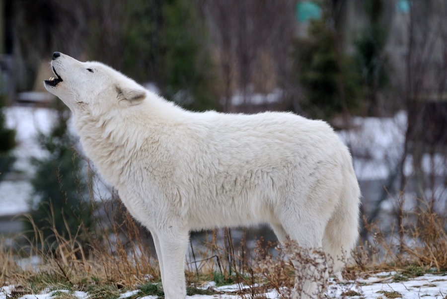

Arctic Wolf
They live in the Arctic Circle, Alaska, Northern Canada, Iceland and Greenland.
- Scientific Name: Canis lupus arctos.
- Average length: 30 inches.
- Average lifespan: 7 years.
- Regions: Greenland North America.
Arctic wolves have white fur, which helps them blend in with the snowy environment around them. Compared to other subspecies of wolves, they have smaller ears, shorter legs, and smaller muzzles. Their fur, however, is dense and long in comparison to other subspecies. At their longest they can grow to nearly 6 ft. long, including their tail.